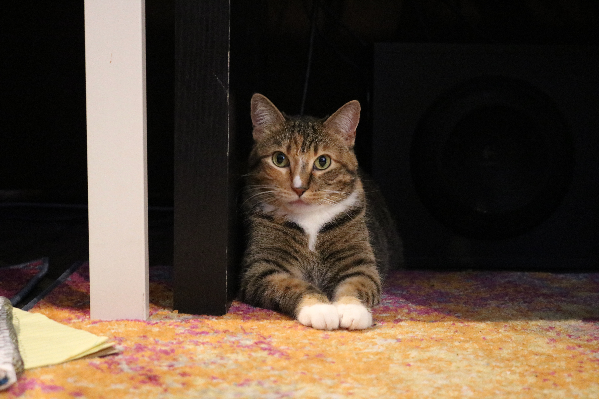

Hi, I'm Allysha Bilges

What I do
I am a Technical Support Specialist
I am a Technical Support Specialist
Hey there, I'm Allysha Bilges, and I'm on a lifelong quest to explore the world of technology and creativity. Armed with a degree in Computer Science and Information Technology from Graceland University, I'm a digital explorer navigating the vast landscape of bits and bytes.
My journey began with a penchant for technical thinking, honed through various roles in customer support, where I mastered the art of troubleshooting and optimizing processes. I've danced through the realms of a Scrum Master, donned the hat of a Business Analyst, and now proudly wear the mantle of a Technical Support Specialist. My multifaceted experiences have not only expanded my skill set but also deepened my passion for problem-solving in the digital domain.
In my free time, you'll often find me immersed in my passions. As a barbecue virtuoso, I love conjuring culinary magic over a hot grill, experimenting with flavors and techniques. In addition to my culinary adventures, I have a keen interest in meteorology. I'm fascinated by the ever-changing patterns of the weather, from the gentle caress of a spring breeze to the awe-inspiring power of a thunderstorm. I love learning about weather phenomena, understanding the science behind them, and appreciating the beauty of nature's elements.I have always contributed my love for weather to my childhood living in Oklahoma.
Fall is my season, where I don the hat of a budding photographer, capturing the breathtaking colors of autumn, but I must admit im not much of an outdoors person.I would much prefer to be inside, gaming or learning something new about the vast world of technolgoy.
Last but not least, I share my space with two feline companions who often oversee my coding adventures, and a husband who's my favorite co-chef, though we both agree that cleaning is not our strong suit!
Join me on this journey as I continue to push the boundaries of technology, creativity, and culinary escapades. Let's explore the digital frontier together!
Full Stack Developer Download Resume
Find me on Linkedin & Twitter
allysha-bilges@AB_StormChasing